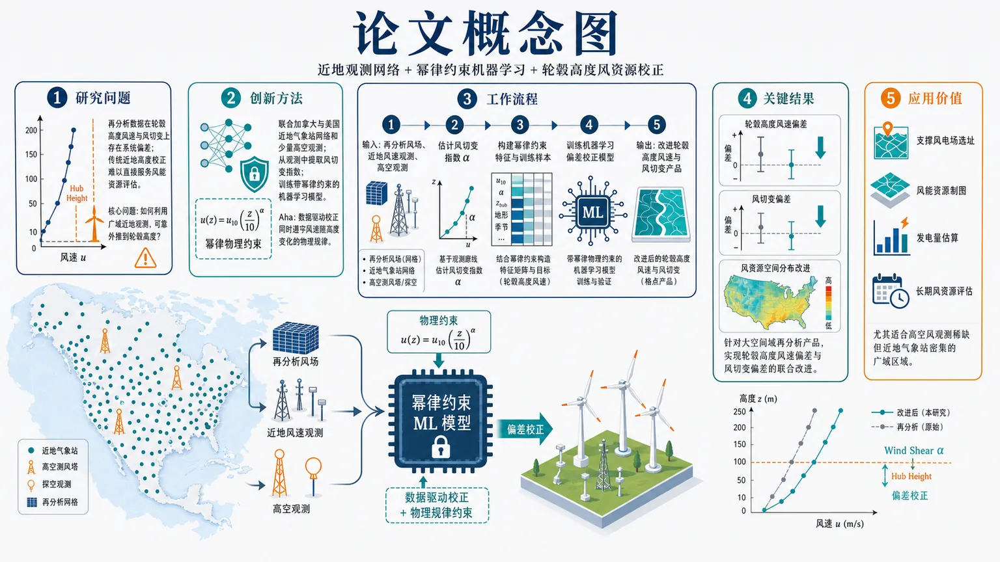

AI × Science 文献日报 2026/07/06
聚焦 AI × 物理 / 化学 / 材料交叉方向，自动过滤明显偏题的医学、教育与社会科学内容，并按主题重新排版，便于快速深读。
AI | 物理 | 化学 | 材料 | 交叉学科
原始候选 114 篇中，已剔除 0 篇明显偏离主线的内容，并从剩余 114 篇主线相关文献中精选 60 篇进入日报页，优先保留 AI × 物理 / 化学 / 材料交叉与关键计算方法工作。
核心关注（ML × ferro / 凝聚态）
8 篇与 NbOI2、CrI3、CrSBr、BaTiO3 中常见的 DFT+U→MACE/NEP/equivariant GNN 势能面与序参量学习路线不同，本日核心推进集中在量子多体求解器的可训练表示、稀疏量测重建和对称性嵌入。图神经编码、条件扩散模型、p4m 群卷积网络把哈密顿量结构、器件测量图和空间群量子数直接写入模型，减少纯黑箱拟合。凝聚态材料侧的实质信息来自交错磁性自旋电子学和 Ruddlesden–Popper 面外铁电对称性工程，问题焦点从单一性能预测转向电控、自旋劈裂、极化方向与低损耗响应的耦合设计。对 ML × ferro/磁性研究者，下一步更像是把这些对称约束生成模型接到 DFT+U 数据、MACE/NEP 势和 equivariant GNN 表征上，而不是只扩大训练集。
-
01图神经编码改进量子本征求解器Improving generalization and trainability of quantum eigensolvers via graph neural encoding
📄 摘要：针对多体哈密顿量基态求解中初态重叠不足与变分量子本征求解器训练困难的问题，引入图神经编码来构造量子线路/参数表示。方法把哈密顿量结构映射为可泛化的神经表示，目标是在不同系统规模或实例间提升基态近似的可迁移性与优化稳定性，服务相位估计和量子子空间方法所需的高重叠初态制备。
💡 亮点：图神经编码被用于改造变分量子本征求解器，使量子线路参数学习更贴近多体哈密顿量图结构。亮点在于面向基态初态制备的泛化与可训练性，而非单一实例拟合。
📐 方法要点：用图神经编码哈密顿量结构，生成可迁移 VQE 初态与参数。
🔗 相关工作关联：呼应神经量子态、图网络哈密顿量学习、VQE 初始化与量子相位估计。
💡 对你方向的启示：可把晶格图、交换路径、轨道连接显式编码进凝聚态基态求解器。
-
02扩散模型重建量子点电荷稳定图Reconstructing quantum dot charge stability diagrams with diffusion models
📄 摘要：面向自旋量子处理器中量子点器件表征瓶颈，采用条件扩散模型从稀疏测量重建完整电荷稳定图。该生成式方案针对高分辨率 CSD 采集耗时、远程传感器不能直接探测目标量子点电荷等场景，可在少量采样下恢复定义量子点占据的二维数据图，加速量子点阵列调参与表征。
💡 亮点：条件扩散模型把量子点 CSD 从稀疏采样补全为高分辨图像，直接瞄准远程传感架构的测量瓶颈。该方法把生成模型引入量子器件自动表征流程。
📐 方法要点：条件扩散模型由稀疏采样重建完整量子点电荷稳定图。
🔗 相关工作关联：呼应生成式压缩感知、贝叶斯实验设计、量子器件自动调参。
💡 对你方向的启示：稀疏实验图像可用生成先验补全，适合畴结构和相图快速测绘。
-
03量子二聚体低能谱的群卷积网络Group convolutional neural network for the low-energy spectrum in the quantum dimer model
📄 摘要：在 L×L 方格量子二聚体模型中构建具有 p4m 空间群对称性的群卷积神经网络，分别表示每个晶格空间群不可约表示中的最低能本征态；不可约表示数为 (L²+18L+72)/8。对称性显式嵌入网络后，可在不同动量/点群扇区中学习低能谱，减少对称简并与量子数混杂带来的训练负担。
💡 亮点：p4m 群卷积网络把方格量子二聚体模型的空间群量子数直接写入神经态。它把低能谱学习分解到各不可约表示扇区，是对称性机器学习处理强关联模型的具体范例。
📐 方法要点：p4m 群卷积网络分不可约表示学习量子二聚体低能谱。
🔗 相关工作关联：呼应对称神经量子态、群等变 CNN、动量扇区精确对角化。
💡 对你方向的启示：训练前先按空间群分扇区，可降低简并态混杂和量子数污染。
-
04量子机器学习模型的渐进复杂度学习Learning complexity gradually in quantum machine learning models
📄 摘要：针对量子机器学习训练中初始化与优化困难，提出逐步增加模型复杂度的训练策略。该思路避免一开始使用高表达但难优化的量子模型，而是在较简单可训练区域获得参数后逐级扩展，有助于缓解贫瘠高原和收敛不稳定问题，适用于近程量子线路与混合量子—经典学习任务。
💡 亮点：渐进复杂度训练把量子模型从易优化子空间逐步扩展到高表达区域。核心价值在于用训练日程而非单纯新线路结构改善量子机器学习可优化性。
📐 方法要点：从低复杂度量子模型起训，再逐级扩展线路表达能力。
🔗 相关工作关联：呼应课程学习、层生长 ansatz、贫瘠高原缓解与量子自然梯度。
💡 对你方向的启示：凝聚态量子线路可先学局域关联，再加入长程纠缠和复杂对称破缺。
-
05量子积木学习的混合智能模块原则Quantum LEGO Learning: A Modular Design Principle for Hybrid Artificial Intelligence
📄 摘要：提出量子积木学习框架，将混合量子—经典学习拆分为可复用的经典块和量子块，并显式区分编码、量子处理与下游学习功能。不同于紧耦合端到端训练，该模块化方案允许使用预训练经典组件，降低对特定量子编码器的依赖，并提升噪声量子设备上混合模型的优化稳定性与可组合性。
💡 亮点：量子积木学习主张把混合量子—经典模型拆成可替换模块，而不是端到端强耦合训练。它对近中期量子机器学习的工程化与抗噪部署更友好。
📐 方法要点：把混合量子—经典学习拆成编码、量子处理、下游模块。
🔗 相关工作关联：呼应模块化深度学习、量子核方法、预训练表征与混合量子分类器。
💡 对你方向的启示：材料表征器可先用经典预训练，再替换量子块测试真实增益。
-
06结构相干模型预测熔盐热导率Integration of a Structural Coherence Model with a Semi-Universal Machine Learning Interatomic Potential to Predict Molten Salt Thermal Conductivity
📄 摘要：面向能源系统用熔盐热导率数据库缺口，将结构相干模型与半通用机器学习原子间势结合，用分子动力学预测热导率。相较 Green–Kubo 或非平衡分子动力学等高成本流程，该方案试图以物理约束结构描述和可迁移势函数降低计算开销，同时覆盖实验数据稀缺的多组分熔盐体系。
💡 亮点：半通用机器学习势与结构相干模型被结合用于熔盐热导率预测。该路线把热物性数据库补全从昂贵逐体系模拟推向可迁移的物理—机器学习框架。
📐 方法要点：结构相干模型结合半通用 ML 势，用 MD 预测熔盐热导率。
🔗 相关工作关联：呼应 MACE、NEP、GAP、DeePMD 势函数和 Green–Kubo 热输运。
💡 对你方向的启示：热输运预测需把局域结构相干性作为势函数外的物理约束。
-
07交错磁性自旋电子学Altermagnetic spintronics
📄 摘要：综述交错磁性这一非常规磁有序及其在自旋电子学中的作用。交错磁体兼具零净磁化与动量依赖自旋劈裂，有望实现快速、低串扰自旋器件；文章讨论其与铁电、超导体系的耦合，以及可扩展器件中电控、自旋输运和多功能异质结构的机会与挑战。
💡 亮点：交错磁体把反铁磁的零净磁矩与类似铁磁的自旋劈裂结合起来。综述将其与铁电、超导和可扩展自旋器件联系，是交错磁性走向材料与器件设计的路线图。
📐 方法要点：综述零净磁化但动量自旋劈裂的交错磁性自旋电子学。
🔗 相关工作关联：呼应反铁磁自旋电子学、自旋霍尔输运、铁电控磁和超导邻近效应。
💡 对你方向的启示：ML 筛选应同时标注磁空间群、k 依赖劈裂和电控可翻转性。
-
08面外 Ruddlesden–Popper 铁电体破缺对称Out-of-plane Ruddlesden–Popper ferroelectrics catch a break
📄 摘要：聚焦 Ruddlesden–Popper 铁电材料的对称性破缺工程。通过破坏原有对称性，可制备面外介电材料，并获得高可调性与低损耗特征；该结果强调层状钙钛矿结构中极化方向和介电响应可由结构对称性控制，适用于可调电容、射频介电和低损耗电子器件。
💡 亮点：Ruddlesden–Popper 铁电体通过对称性破缺实现面外高可调、低损耗介电响应。该设计把层状铁电的极化方向控制转化为器件级介电调谐手段。
📐 方法要点：通过 Ruddlesden–Popper 层状结构破缺对称性实现面外铁电响应。
🔗 相关工作关联：呼应杂化非本征铁电、层状钙钛矿、可调介电和低损耗射频材料。
💡 对你方向的启示：特征工程应显式加入层错、八面体转动和极化方向选择规则。
今日摘要
总览：今日文献集中在机器学习辅助量子多体与材料性质预测、非常规磁性和拓扑超导三条线上：图神经编码用于变分量子本征求解器，扩散模型重建量子点电荷稳定图，群卷积网络处理量子二聚体模型低能谱，结构相干模型结合半通用机器学习原子间势预测熔盐热导率。材料侧突出交变磁体、弛豫铁电体、受应变的钽酸钾、单层极限钌酸锶、铬硒化物、铋钽硫超导体、五角双锥硼二维同素异形体以及镍钴钪锑氧中的魔鬼阶梯磁螺旋，现象横跨极性反铁磁金属、拓扑磁振子、平带超导刚度、外尔半金属体电磁混合模和自旋冰卡斯特莱恩转变动力学。
热点：热点一：人工智能嵌入量子与材料计算 → 用图神经编码、扩散生成模型、群卷积网络、深度平衡网络和机器学习力场提升可训练性、重构实验相图或替代昂贵第一性原理采样 → 典型工作包括量子本征求解器泛化、量子点电荷稳定图重建、量子二聚体低能谱学习、熔盐热导率预测和受应变钽酸钾铁电序模拟。热点二：交变磁性与自旋电子学 → 利用零净磁矩但动量依赖自旋劈裂的交变磁体实现超快非对称自旋动力学、金属态超导交织序和自旋输运调控 → 典型工作包括交变磁自旋电子学综述、金属交变磁体中的超导态与交织序、以及用超快动力学磁化交变磁体。热点三：拓扑与非常规超导从分类走向可探测响应 → 平均晶体对称的实空间构造、弱二阶拓扑绝缘体、无能隙拓扑相纠缠谱、外尔半金属异常诱导电磁模和平带无序超流权重共同强调边界态、响应函数和无序竞争 → 典型工作包括拓扑超导分类、隐藏在平凡对称指标中的弱二阶拓扑绝缘体、外尔半金属混合体模和无序平带超导。热点四：受挫磁体与低维磁激发 → 通过中子散射、场淬火动力学、磁声耦合和曲面自旋转移动力学追踪单极子、弦、磁螺旋、拓扑磁振子与自旋向列隐序 → 典型体系包括自旋冰、铈银铅、钡铒铁氧、铋铜硫酸盐、镍钴钪锑氧和铁磁锯齿晶格。
今日文献
60 篇 · 10 含图深析-
01
📊 含图深析
📄 摘要：针对多体哈密顿量基态求解中初态重叠不足与变分量子本征求解器训练困难的问题，引入图神经编码来构造量子线路/参数表示。方法把哈密顿量结构映射为可泛化的神经表示，目标是在不同系统规模或实例间提升基态近似的可迁移性与优化稳定性，服务相位估计和量子子空间方法所需的高重叠初态制备。
💡 亮点：图神经编码被用于改造变分量子本征求解器，使量子线路参数学习更贴近多体哈密顿量图结构。亮点在于面向基态初态制备的泛化与可训练性，而非单一实例拟合。
📖 展开分析 + 配图
 研究问题标准变分量子本征求解器在多体哈密顿量基态制备中容易出现优化困难、初态重叠不足和跨体系泛化弱的问题；画面可表现为“复杂哈密顿量网络”进入“崎岖能量地形”，传统 VQE 小车被困在局部谷底，难以到达基态目标。创新方法将多体哈密顿量显式转化为图结构，用图神经网络读取粒子、相互作用和耦合关系，生成或辅助生成 VQE 的初始量子态与变分线路信息；Aha 点是让模型从“哈密顿量图谱”中学习可迁移的基态制备策略，而不是只在单个体系上盲目调参。工作流程输入多体哈密顿量及其相互作用关系；构建节点—边图表示；图神经网络进行消息传递与结构编码；输出初态参数或量子线路辅助信息；送入 VQE 优化得到更高基态重叠的近似基态；该结果继续作为量子相位估计或量子子空间方法的优质输入。关键结果该框架旨在提升 VQE 的可训练性和对更大或不同体系的泛化能力，降低对人工高质量初态的依赖，并提高后续量子算法所需的基态重叠；具体实验体系、数值提升幅度和对比基线在所给内容中未详述。应用价值为量子化学、凝聚态物理和多体量子系统模拟提供更可靠的基态制备入口；可作为 VQE、量子相位估计和量子子空间算法之间的桥梁，使量子算法流水线从“难初始化、难训练”转向“结构感知、可迁移启动”。
研究问题标准变分量子本征求解器在多体哈密顿量基态制备中容易出现优化困难、初态重叠不足和跨体系泛化弱的问题；画面可表现为“复杂哈密顿量网络”进入“崎岖能量地形”，传统 VQE 小车被困在局部谷底，难以到达基态目标。创新方法将多体哈密顿量显式转化为图结构，用图神经网络读取粒子、相互作用和耦合关系，生成或辅助生成 VQE 的初始量子态与变分线路信息；Aha 点是让模型从“哈密顿量图谱”中学习可迁移的基态制备策略，而不是只在单个体系上盲目调参。工作流程输入多体哈密顿量及其相互作用关系；构建节点—边图表示；图神经网络进行消息传递与结构编码；输出初态参数或量子线路辅助信息；送入 VQE 优化得到更高基态重叠的近似基态；该结果继续作为量子相位估计或量子子空间方法的优质输入。关键结果该框架旨在提升 VQE 的可训练性和对更大或不同体系的泛化能力，降低对人工高质量初态的依赖，并提高后续量子算法所需的基态重叠；具体实验体系、数值提升幅度和对比基线在所给内容中未详述。应用价值为量子化学、凝聚态物理和多体量子系统模拟提供更可靠的基态制备入口；可作为 VQE、量子相位估计和量子子空间算法之间的桥梁，使量子算法流水线从“难初始化、难训练”转向“结构感知、可迁移启动”。核心概览
该论文属于量子算法与机器学习交叉方向，研究用图神经网络编码多体哈密顿量结构，为变分量子本征求解器生成初态或线路信息，以提升基态制备的可训练性、泛化能力和后续算法所需的基态重叠。
方法要点
- 将多体哈密顿量相关信息表示为图结构，并用图神经网络进行编码。
- 利用图神经网络为 VQE 生成或辅助编码初始量子态。
- 利用图神经网络提供或优化变分量子线路相关信息。
- 目标是缓解标准 VQE 在大体系中优化困难、泛化能力弱的问题。
- 将改进后的 VQE 输出用于提升量子相位估计、量子子空间方法等后续算法的基态重叠。
关键结果
- 摘要明确指出，该方法旨在改善多体哈密顿量基态制备中的训练困难问题。
- 摘要明确指出，该方法旨在增强 VQE 对更大或不同体系的泛化能力。
- 摘要明确指出，该方法试图降低标准 VQE 对高质量初态重叠的依赖。
- 摘要明确指出，该方法面向提升后续量子算法所需的基态重叠。
- 具体实验体系、性能提升幅度、对比基线和数值结果摘要未详述。
创新性判断
- 可能的新颖点在于用图神经网络显式编码哈密顿量结构，并将其用于 VQE 初态或线路信息生成，而不仅是传统参数优化；这一判断基于摘要，具体实现摘要未详述。
- 相比标准 VQE，该工作可能强调跨体系泛化，即让模型从哈密顿量图结构中学习可迁移的制备策略；但泛化设置和验证范围摘要未详述。
- 该方法的目标不仅是降低 VQE 能量，还关注为量子相位估计、量子子空间方法等后续算法提供高基态重叠输入，体现了面向算法流水线的设计思路。
- 创新程度仍需全文验证，包括是否已有类似 GNN-VQE、神经量子态初始化或线路生成方法，以及本文相对它们的具体差异；摘要未详述。
-
02
📄 摘要：面向自旋量子处理器中量子点器件表征瓶颈，采用条件扩散模型从稀疏测量重建完整电荷稳定图。该生成式方案针对高分辨率 CSD 采集耗时、远程传感器不能直接探测目标量子点电荷等场景，可在少量采样下恢复定义量子点占据的二维数据图，加速量子点阵列调参与表征。
💡 亮点：条件扩散模型把量子点 CSD 从稀疏采样补全为高分辨图像，直接瞄准远程传感架构的测量瓶颈。该方法把生成模型引入量子器件自动表征流程。
📖 展开分析 + 配图
 研究问题自旋量子处理器调参时，传统量子点电荷稳定图需要逐点高密度扫描，耗时巨大；尤其在远程传感器无法直接探测目标量子点电荷的架构中，如何仅用稀疏测量点重建出完整、高分辨率的电荷占据边界和电荷跃迁图案，是本文的核心问题。创新方法论文将条件扩散模型引入量子点电荷稳定图重建：把稀疏采样的测量网格作为条件输入，让扩散生成模型学习完整CSD的结构分布，从噪声中逐步生成清晰的高分辨电荷稳定图；Aha点在于用生成式扩散先验替代传统密集扫描或简单插值，重点保留斜线状占据边界、蜂窝状/分区状电荷跃迁结构。工作流程输入少量栅压扫描得到的稀疏CSD测量点；将稀疏图作为条件信息送入条件扩散模型；模型在迭代去噪过程中补全未测区域；逐步恢复电荷占据区域、边界线和跃迁轨迹；最终输出完整高分辨率量子点电荷稳定图，用于后续器件识别、调参与表征。关键结果条件扩散模型能够从稀疏量测中重建完整高分辨CSD，在少量采样条件下仍以保持占据边界和电荷跃迁结构为目标；该方法被证明适合远程传感器不能直接读取目标量子点电荷的器件场景。摘要未给出具体数值指标、误差下降幅度或基线对比。应用价值该研究可显著减少量子点阵列调参与表征所需的扫描点数和测量时间，帮助自旋量子处理器更快获得电荷状态地图；对大规模量子点器件、远程传感架构和自动化量子芯片调试具有实际价值，可把耗时的二维密集测量转化为少量采样后的智能重建。
研究问题自旋量子处理器调参时，传统量子点电荷稳定图需要逐点高密度扫描，耗时巨大；尤其在远程传感器无法直接探测目标量子点电荷的架构中，如何仅用稀疏测量点重建出完整、高分辨率的电荷占据边界和电荷跃迁图案，是本文的核心问题。创新方法论文将条件扩散模型引入量子点电荷稳定图重建：把稀疏采样的测量网格作为条件输入，让扩散生成模型学习完整CSD的结构分布，从噪声中逐步生成清晰的高分辨电荷稳定图；Aha点在于用生成式扩散先验替代传统密集扫描或简单插值，重点保留斜线状占据边界、蜂窝状/分区状电荷跃迁结构。工作流程输入少量栅压扫描得到的稀疏CSD测量点；将稀疏图作为条件信息送入条件扩散模型；模型在迭代去噪过程中补全未测区域；逐步恢复电荷占据区域、边界线和跃迁轨迹；最终输出完整高分辨率量子点电荷稳定图，用于后续器件识别、调参与表征。关键结果条件扩散模型能够从稀疏量测中重建完整高分辨CSD，在少量采样条件下仍以保持占据边界和电荷跃迁结构为目标；该方法被证明适合远程传感器不能直接读取目标量子点电荷的器件场景。摘要未给出具体数值指标、误差下降幅度或基线对比。应用价值该研究可显著减少量子点阵列调参与表征所需的扫描点数和测量时间，帮助自旋量子处理器更快获得电荷状态地图；对大规模量子点器件、远程传感架构和自动化量子芯片调试具有实际价值，可把耗时的二维密集测量转化为少量采样后的智能重建。核心概览
本文属于量子点表征与机器学习交叉方向，使用条件扩散模型从稀疏量测重建高分辨量子点电荷稳定图（CSD），以减少自旋量子处理器调参与表征中的测量耗时。
方法要点
- 训练条件扩散模型，将稀疏采样的量测数据作为条件输入，生成完整高分辨 CSD。
- 任务目标是重建量子点电荷稳定图中的占据边界与电荷跃迁结构。
- 方法面向远程传感器无法直接探测目标量子点电荷的器件架构。
- 评估重点放在少量采样条件下的重建质量，而非摘要未详述的具体采样比例、网络结构或训练细节。
关键结果
- 条件扩散模型可用于从稀疏量测重建完整高分辨 CSD。
- 该方法被表述为适用于远程传感器无法直接探测目标量子点电荷的架构。
- 在少量采样场景下，方法关注并旨在保持占据边界和电荷跃迁结构。
- 具体定量性能、对比基线、误差指标和实验数据规模摘要未详述。
创新性判断
- 可能的新颖点在于将条件扩散模型用于量子点电荷稳定图的稀疏重建，而非传统逐点高密度扫描；这一判断基于摘要，具体是否首次应用摘要未详述。
- 相比一般图像补全或插值方法，其潜在优势可能在于扩散模型对复杂结构分布的生成建模能力，尤其是保持电荷跃迁边界；但摘要未提供与其他模型的直接比较。
- 面向远程传感器不可直接探测目标量子点的架构，是一个较有应用针对性的设定，可能增强其实用创新性；具体器件类型和验证范围摘要未详述。
-
03
📊 含图深析
📄 摘要：提出量子积木学习框架，将混合量子—经典学习拆分为可复用的经典块和量子块，并显式区分编码、量子处理与下游学习功能。不同于紧耦合端到端训练，该模块化方案允许使用预训练经典组件，降低对特定量子编码器的依赖，并提升噪声量子设备上混合模型的优化稳定性与可组合性。
💡 亮点：量子积木学习主张把混合量子—经典模型拆成可替换模块，而不是端到端强耦合训练。它对近中期量子机器学习的工程化与抗噪部署更友好。
📖 展开分析 + 配图
 研究问题混合量子–经典人工智能模型常被端到端紧耦合设计绑定：数据编码、量子线路处理、经典读出相互依赖，导致训练优化困难、对量子噪声敏感，并且过度依赖某一种量子编码器，限制模型复用、迁移和组合扩展。创新方法提出“量子积木学习”框架，把混合量子–经典学习系统拆成可替换、可复用的模块化积木：经典块负责数据预处理与读出，量子块负责量子态编码和量子处理；核心 Aha 点是将编码、量子处理、结果读出三种功能显式解耦，用积木拼装替代端到端黑箱耦合。工作流程输入经典数据后，先进入可选经典预处理模块；随后由数据编码模块把信息映射到量子态；量子处理模块执行参数化量子操作；测量结果进入经典读出模块；最终输出预测或决策。各模块像积木一样可单独训练、替换、复用和重新组合。关键结果论文主要给出概念性框架而非明确实验指标：量子积木学习被描述为可降低混合量子–经典模型的优化难度，减少训练过程中的模块间牵制；可能增强对量子噪声的鲁棒性；并降低系统对特定量子编码器或固定量子线路结构的依赖。应用价值该框架为量子机器学习系统提供更清晰的工程化设计原则：研究者可像搭建积木一样组合经典模块和量子模块，便于快速原型开发、模块复用、故障替换、跨任务迁移，并为未来噪声中等规模量子设备上的混合人工智能应用提供更灵活的架构基础。
研究问题混合量子–经典人工智能模型常被端到端紧耦合设计绑定：数据编码、量子线路处理、经典读出相互依赖，导致训练优化困难、对量子噪声敏感，并且过度依赖某一种量子编码器，限制模型复用、迁移和组合扩展。创新方法提出“量子积木学习”框架，把混合量子–经典学习系统拆成可替换、可复用的模块化积木：经典块负责数据预处理与读出，量子块负责量子态编码和量子处理；核心 Aha 点是将编码、量子处理、结果读出三种功能显式解耦，用积木拼装替代端到端黑箱耦合。工作流程输入经典数据后，先进入可选经典预处理模块；随后由数据编码模块把信息映射到量子态；量子处理模块执行参数化量子操作；测量结果进入经典读出模块；最终输出预测或决策。各模块像积木一样可单独训练、替换、复用和重新组合。关键结果论文主要给出概念性框架而非明确实验指标：量子积木学习被描述为可降低混合量子–经典模型的优化难度，减少训练过程中的模块间牵制；可能增强对量子噪声的鲁棒性；并降低系统对特定量子编码器或固定量子线路结构的依赖。应用价值该框架为量子机器学习系统提供更清晰的工程化设计原则：研究者可像搭建积木一样组合经典模块和量子模块，便于快速原型开发、模块复用、故障替换、跨任务迁移，并为未来噪声中等规模量子设备上的混合人工智能应用提供更灵活的架构基础。核心概览
本文提出“量子积木学习”框架，属于混合量子–经典人工智能/量子机器学习方向，主张将系统模块化为可复用经典块与量子块，以改进训练、噪声鲁棒性和编码依赖问题。
方法要点
- 将混合量子–经典学习系统拆分为可复用的经典模块和量子模块。
- 显式区分三个功能角色：数据编码、量子处理与结果读出。
- 采用模块化设计替代端到端紧耦合训练流程。
- 设计目标包括降低优化难度、减弱对噪声的敏感性，并降低对特定量子编码器的依赖。
- 摘要未详述具体量子线路结构、经典模型类型、训练算法或实验设置。
关键结果
- 摘要明确提出了“量子积木学习”这一模块化框架。
- 该框架被描述为有助于降低混合量子–经典模型的优化难度。
- 该框架被描述为可能减弱模型对量子噪声的敏感性。
- 该框架被描述为可减少系统对特定量子编码器的依赖。
- 摘要未详述是否有实验验证、基准任务、性能指标或定量提升结果。
创新性判断
- 可能的新颖点在于将混合量子–经典学习明确抽象为“可复用积木式模块”，而非传统端到端耦合架构。
- 其创新性还可能体现在对编码、量子处理、读出三类功能的显式解耦，使模型设计更具组合性和迁移性。
- 相比依赖特定量子编码器或特定量子线路的方案，该框架可能强调更通用的模块替换原则。
- 但摘要未提供与已有模块化量子机器学习、变分量子算法或混合模型设计工作的具体对比，因此创新幅度和实证优势仍无法确定。
-
04
📊 含图深析
📄 摘要：面向能源系统用熔盐热导率数据库缺口，将结构相干模型与半通用机器学习原子间势结合，用分子动力学预测热导率。相较 Green–Kubo 或非平衡分子动力学等高成本流程，该方案试图以物理约束结构描述和可迁移势函数降低计算开销，同时覆盖实验数据稀缺的多组分熔盐体系。
💡 亮点：半通用机器学习势与结构相干模型被结合用于熔盐热导率预测。该路线把热物性数据库补全从昂贵逐体系模拟推向可迁移的物理—机器学习框架。
📖 展开分析 + 配图
 研究问题能源系统中的熔盐热导率数据稀缺，而传统 Green–Kubo 或非平衡分子动力学计算像“逐个体系做昂贵模拟”一样成本高、难以覆盖多种熔盐组成；核心问题是如何用更低计算代价预测多组分熔盐的热导率，并保持可控的不确定度。创新方法将“结构相干模型”与“半通用机器学习原子间势”耦合：前者把熔盐微观结构的相干特征转化为热传导预测线索，后者像可跨体系复用的原子相互作用引擎，覆盖多种熔盐组成；Aha 点是用结构模型+机器学习势替代大量昂贵热流涨落或非平衡传热模拟。工作流程输入多种熔盐组成与原子结构信息；使用半通用机器学习原子间势快速描述离子间相互作用并生成结构特征；将局部/整体结构相干信息送入热导率结构模型；输出熔盐热导率估计值，并以不确定度控制辅助判断预测可靠性。关键结果论文提出了一条面向多种熔盐体系的低成本热导率预测路线，可用于弥补能源熔盐热物性数据库缺口；相比 Green–Kubo 和非平衡分子动力学，该路线被定位为计算量更低的替代方案；摘要未给出具体精度、加速倍数或定量对比数据。应用价值可为核能、聚光太阳能、储热与高温传热系统中的熔盐筛选提供快速热导率估计，减少逐体系实验或高成本分子动力学计算需求，加速熔盐热物性数据库建设和候选配方初筛。
研究问题能源系统中的熔盐热导率数据稀缺，而传统 Green–Kubo 或非平衡分子动力学计算像“逐个体系做昂贵模拟”一样成本高、难以覆盖多种熔盐组成；核心问题是如何用更低计算代价预测多组分熔盐的热导率，并保持可控的不确定度。创新方法将“结构相干模型”与“半通用机器学习原子间势”耦合：前者把熔盐微观结构的相干特征转化为热传导预测线索，后者像可跨体系复用的原子相互作用引擎，覆盖多种熔盐组成；Aha 点是用结构模型+机器学习势替代大量昂贵热流涨落或非平衡传热模拟。工作流程输入多种熔盐组成与原子结构信息；使用半通用机器学习原子间势快速描述离子间相互作用并生成结构特征；将局部/整体结构相干信息送入热导率结构模型；输出熔盐热导率估计值，并以不确定度控制辅助判断预测可靠性。关键结果论文提出了一条面向多种熔盐体系的低成本热导率预测路线，可用于弥补能源熔盐热物性数据库缺口；相比 Green–Kubo 和非平衡分子动力学，该路线被定位为计算量更低的替代方案；摘要未给出具体精度、加速倍数或定量对比数据。应用价值可为核能、聚光太阳能、储热与高温传热系统中的熔盐筛选提供快速热导率估计，减少逐体系实验或高成本分子动力学计算需求，加速熔盐热物性数据库建设和候选配方初筛。核心概览
该论文面向熔盐热导率预测，结合结构相干模型与半通用机器学习原子间势，以低成本替代昂贵分子动力学计算。
方法要点
- 将“结构相干模型”用于熔盐热导率预测框架中。
- 结合“半通用机器学习原子间势”描述多种熔盐体系的原子相互作用。
- 旨在替代高计算成本的 Green–Kubo 方法或非平衡分子动力学热导率计算。
- 面向多种熔盐组成进行热导率估计，而非仅针对单一体系。
- 强调在降低计算量的同时控制预测不确定度；具体不确定度量化方法摘要未详述。
关键结果
- 摘要明确指出该方法用于填补能源系统用熔盐热导率数据库缺口。
- 论文提出一种结构模型与机器学习势耦合的热导率预测路线。
- 该路线被定位为比 Green–Kubo 或非平衡分子动力学更低计算成本的替代方案。
- 目标是在多种熔盐组成上预测热导率并控制不确定度。
- 摘要未详述具体预测精度、计算加速倍数、验证体系数量或与实验/MD 的定量对比结果。
创新性判断
- 可能的新颖点在于将结构相干模型与半通用机器学习原子间势集成，用于熔盐热导率预测；这一组合相对常规 Green–Kubo 或非平衡分子动力学可能更高效。
- “半通用”机器学习势若能覆盖多种熔盐组成，可能提升跨体系预测能力，但其训练范围、泛化能力和验证细节摘要未详述。
- 将低成本预测与不确定度控制同时作为目标，可能是面向熔盐热物性数据库建设的实用创新；但具体不确定度控制策略摘要未说明。
- 总体看，创新更偏向方法集成与应用场景拓展，而非摘要中可确认的全新物理理论或全新机器学习架构。
-
05
📊 含图深析
📄 摘要：利用加拿大和美国近地气象站网络，结合较小规模高空观测网络推导理论风切变指数，并将幂律关系嵌入机器学习模型。目标是修正大空间域再分析产品在轮毂高度风速和风切变上的偏差，弥补仅在常规观测高度训练的局限。
💡 亮点：近地大规模观测与少量高空网络共同约束风切变指数，再由嵌入幂律的机器学习校正再分析风速。该混合物理-数据框架适合风能资源评估中的高度外推问题。
📖 展开分析 + 配图

研究问题大范围再分析数据在风机轮毂高度风速和风切变上存在系统偏差，传统近地高度校正难以直接服务风能资源评估，需要解决“如何利用广域观测网络把近地信息可靠外推到轮毂高度”的问题。创新方法将加拿大和美国的大范围近地气象站网络与少量高空观测网络联合起来，先从观测中提取风切变指数，再训练带幂律约束的机器学习模型；Aha 点是让数据驱动校正同时遵守风速随高度变化的物理规律，直接修正轮毂高度风速与风切变。工作流程输入再分析风场、近地气象站风速观测和少量高空观测；由观测数据估计风切变指数；构建幂律约束特征与训练样本；训练机器学习偏差校正模型；输出跨大空间域的改进轮毂高度风速和风切变产品。关键结果该方法针对大空间域再分析产品，实现对轮毂高度风速偏差和风切变偏差的联合改进；论文摘要未给出具体提升幅度、评价指标、基线模型、站点数量或区域差异。应用价值为风电场选址、风能资源制图、发电量估算和长期风资源评估提供更接近真实轮毂高度风况的数据基础，尤其适合观测高空风资源稀缺但近地气象站密集的广域区域。核心概览
论文面向风能资源评估，利用近地与少量高空观测网络，训练带幂律约束的机器学习模型，修正再分析数据的轮毂高度风速与风切变偏差。
方法要点
- 结合加拿大和美国的大范围近地气象站观测网络作为主要观测基础。
- 引入较小规模的高空观测网络，用于支撑轮毂高度风速与风切变相关信息。
- 基于观测数据推导理论风切变指数。
- 训练包含幂律约束的机器学习模型，以保持风速随高度变化的物理一致性。
- 研究目标不是仅校正常规近地观测高度风速，而是直接改善再分析产品在风机轮毂高度风速和风切变上的偏差。
关键结果
- 摘要明确指出该方法旨在修正大空间域再分析产品的轮毂高度风速偏差。
- 摘要明确指出该方法同时针对风切变偏差进行改进。
- 摘要未详述具体性能提升幅度、验证指标、对比基线或区域差异。
- 摘要未详述所用再分析产品名称、机器学习模型类型、训练/测试划分和观测站数量。
创新性判断
- 可能的新颖点在于：将大范围近地观测网络与较稀疏的高空观测网络联合使用，用于改善轮毂高度而非仅近地高度的再分析风速；但摘要未详述与已有工作的直接对比。
- 可能的新颖点在于：在机器学习校正中加入幂律约束，使模型既利用数据驱动能力又保留风切变的物理结构；其具体约束形式和优势摘要未详述。
- 可能的新颖点在于：研究对象覆盖“大空间域”，强调跨区域的再分析偏差修正，而非单站点或小区域校正；空间范围和泛化效果摘要未详述。
-
06
📊 含图深析
📄 摘要：从近期预测的正交 o-B14 体相硼出发，研究由边共享五角双锥结构单元形成的二维硼同素异形体。多样键长和七中心二电子 π 键带来非常规电子结构，计算显示其可能兼具超导、磁性和方向依赖等离激元模式。
💡 亮点：五角双锥硼片把多中心键、低维电子结构和各向异性集体激发结合在同一平台。预测的超导、磁性与定向等离激元使其成为二维硼材料设计的候选体系。
📖 展开分析 + 配图
研究问题二维硼材料能否通过“五角双锥”结构单元同时承载超导、磁性与方向性等离激元？核心关注的是：从正交体相硼 o-B14 提取的边共享五角双锥硼网络，是否会因特殊硼—硼键长分布和非常规多中心成键，产生区别于常规硼烯的电子态与集体激发模式。创新方法将新预测的体相 o-B14 中的五角双锥硼骨架“降维”为二维硼同素异形体，并把结构、成键和功能性质联动分析。Aha 点在于识别非常规“七中心二电子 π 键”：少量电子跨越多个硼原子离域，像一张稀薄但连通的 π 电子网，可能同时调控超导配对、磁性来源和方向选择性的等离激元传播。工作流程以正交体相硼 o-B14 为结构母体 → 截取/构建由边共享五角双锥组成的二维硼片 → 分析多种硼—硼键长和局域几何畸变 → 识别七中心二电子 π 离域成键 → 计算电子结构与集体激发响应 → 判断是否出现超导、磁性以及沿特定晶向传播的等离激元模式。关键结果预测二维五角双锥硼同素异形体可能同时具备三类功能：超导性、磁性和方向性等离激元模式。其关键微观特征是复杂硼—硼键长网络与非常规七中心二电子 π 键；该离域成键被视为连接结构稳定性、电子态调控和各向异性光电响应的重要线索。摘要未给出具体临界温度、磁矩或等离激元频率数值。应用价值该研究为设计多功能二维硼材料提供结构蓝图：同一原子级薄片中可能集成无耗散输运、磁性调控和方向性纳米光子传播，可面向二维超导器件、自旋电子学、可调谐等离激元波导、各向异性红外/太赫兹光电器件等应用场景。核心概览
本文基于预测的正交体相硼 o-B14，研究二维五角双锥硼同素异形体的电子/集体激发性质，涉及超导、磁性与方向性等离激元。
方法要点
- 以新近预测的正交体相硼 o-B14 为结构出发点。
- 关注由边共享五角双锥构成的二维硼结构单元。
- 分析该结构中多样化的硼—硼键长特征。
- 识别并讨论非常规七中心二电子 π 键。
- 通过计算预测其超导、磁性和方向性等离激元性质；具体计算方法、参数与模型摘要未详述。
关键结果
- 二维五角双锥硼同素异形体被预测可能具有超导性。
- 该类二维硼结构被预测可能表现出磁性。
- 该类结构还可能支持方向性等离激元模式。
- 摘要明确指出其关键成键特征包括非常规七中心二电子 π 键。
- 超导临界温度、磁矩大小、等离激元频率范围等具体数值摘要未详述。
创新性判断
- 可能的新颖点在于：将 o-B14 中的五角双锥硼结构单元扩展到二维硼同素异形体，并系统关联其成键、超导、磁性与等离激元性质。
- “七中心二电子 π 键”作为非常规成键形式，可能是区别于常见二维硼材料的重要结构—电子特征。
- 同一二维硼体系中同时预测超导、磁性和方向性等离激元模式，若成立，可能具有多功能材料意义。
- 以上创新性判断仅基于摘要；与已有二维硼同素异形体、硼烯及相关等离激元/超导研究的详细对比，摘要未详述。
-
07
📊 含图深析
📄 摘要：研究单层极限 SrRuO3 中二维铁磁金属性与磁各向异性的共存。实验或表征显示，即使降至单层，体系仍保持金属行为，并出现八重磁各向异性。该结果针对二维铁磁金属中强磁性和明确各向异性难以同时稳定的问题，展示了氧化物钙钛矿界面/薄膜调控磁各向异性的可能性。
💡 亮点：SrRuO3 在单层极限仍保持金属性，并呈现八重磁各向异性。该现象为二维氧化物铁磁金属的各向异性工程提供了少见实验平台。
📖 展开分析 + 配图
 研究问题单层极限下的 SrRuO₃ 是否还能像体材料一样保持金属性，并在二维极薄铁磁体系中呈现稳定、清晰且可分辨的磁各向异性结构。创新方法将 SrRuO₃ 压缩到接近单层厚度这一极限尺度，直接检验其二维铁磁金属性，并重点捕捉非常规的“八重磁各向异性”信号；Aha 点在于：极薄到单层后不仅没有失去金属性，还出现比常见单轴或四重对称更复杂的八瓣式磁各向异性图案。工作流程以单层极限 SrRuO₃ 薄层为研究对象 → 考察极薄层中的电子输运行为以判断是否保持金属态 → 分析二维铁磁状态 → 测量或解析不同磁场方向下的磁响应 → 提取八重对称的磁各向异性特征 → 建立“单层金属态 + 二维铁磁性 + 八重各向异性”的材料图像。关键结果SrRuO₃ 即使在单层极限下仍保持金属性，表现为二维铁磁金属；体系中揭示出清晰的八重磁各向异性，说明其磁能量景观呈现八瓣花状方向选择，而非简单的单轴或四重对称。应用价值为设计二维氧化物铁磁金属提供了重要材料范例，可用于探索低维自旋电子器件、各向异性磁存储、可方向调控的二维磁性金属平台，并推动对极限厚度下钙钛矿氧化物电子态与磁态耦合机制的理解。
研究问题单层极限下的 SrRuO₃ 是否还能像体材料一样保持金属性，并在二维极薄铁磁体系中呈现稳定、清晰且可分辨的磁各向异性结构。创新方法将 SrRuO₃ 压缩到接近单层厚度这一极限尺度，直接检验其二维铁磁金属性，并重点捕捉非常规的“八重磁各向异性”信号；Aha 点在于：极薄到单层后不仅没有失去金属性，还出现比常见单轴或四重对称更复杂的八瓣式磁各向异性图案。工作流程以单层极限 SrRuO₃ 薄层为研究对象 → 考察极薄层中的电子输运行为以判断是否保持金属态 → 分析二维铁磁状态 → 测量或解析不同磁场方向下的磁响应 → 提取八重对称的磁各向异性特征 → 建立“单层金属态 + 二维铁磁性 + 八重各向异性”的材料图像。关键结果SrRuO₃ 即使在单层极限下仍保持金属性，表现为二维铁磁金属；体系中揭示出清晰的八重磁各向异性，说明其磁能量景观呈现八瓣花状方向选择，而非简单的单轴或四重对称。应用价值为设计二维氧化物铁磁金属提供了重要材料范例，可用于探索低维自旋电子器件、各向异性磁存储、可方向调控的二维磁性金属平台，并推动对极限厚度下钙钛矿氧化物电子态与磁态耦合机制的理解。核心概览
该论文研究单层极限 SrRuO₃ 的二维铁磁金属性与磁各向异性，属于低维钙钛矿氧化物、二维铁磁金属与自旋电子学材料方向。
方法要点
- 研究对象为单层极限下的钙钛矿氧化物 SrRuO₃。
- 关注其在极薄层条件下是否仍能保持金属性。
- 重点考察二维铁磁状态中的磁各向异性特征。
- 摘要未详述具体制备方法、表征手段或理论计算方法。
关键结果
- 单层极限 SrRuO₃ 在极薄层中仍保持金属性。
- 该体系表现出二维铁磁金属特征。
- 观察到或揭示了八重磁各向异性。
- 结果回应了二维铁磁金属中“强磁性”和“清晰磁各向异性”难以同时实现的问题。
创新性判断
- 可能的新颖点在于证明 SrRuO₃ 即使接近单层极限仍能保持金属性，这对二维氧化物金属较为重要。
- 八重磁各向异性的发现可能是该工作的重要特色，说明其磁各向异性结构比常见的单轴或四重各向异性更复杂。
- 该工作可能为二维铁磁金属中兼具稳定铁磁性、金属性和明确各向异性的材料设计提供案例。
- 但摘要未详述对比对象、实验精度、温度范围和机理分析，因此其相对已有工作的创新程度仍需结合全文判断。
-
08
📄 摘要：综述交错磁性这一非常规磁有序及其在自旋电子学中的作用。交错磁体兼具零净磁化与动量依赖自旋劈裂，有望实现快速、低串扰自旋器件；文章讨论其与铁电、超导体系的耦合，以及可扩展器件中电控、自旋输运和多功能异质结构的机会与挑战。
💡 亮点：交错磁体把反铁磁的零净磁矩与类似铁磁的自旋劈裂结合起来。综述将其与铁电、超导和可扩展自旋器件联系，是交错磁性走向材料与器件设计的路线图。
📖 展开分析 + 配图
 研究问题传统铁磁自旋电子器件有杂散磁场和器件串扰，反铁磁体系又常缺乏清晰可用的自旋分裂信号；核心问题是：能否利用“零净磁化但仍有自旋分裂”的交替磁材料，实现快速、低串扰、可扩展的自旋电子器件。创新方法以交替磁作为新的自旋电子学平台：它不像铁磁体那样产生宏观净磁化，却能在能带中形成动量相关的自旋分裂。Aha 点是把“无外部磁泄漏的安静磁体”和“可操控自旋分裂的活跃能带”结合起来，并进一步连接铁电电控、超导耦合、读写机制和输运器件设计。工作流程从交替磁材料的晶体对称性与磁有序出发，识别零净磁化下的自旋分裂能带；再分析其自旋输运、读写信号和与铁电/超导体系的界面耦合；最后指向材料筛选、器件结构设计和可扩展自旋电子芯片应用。关键结果综述指出交替磁可在零净磁化条件下产生自旋分裂，使器件同时具备低杂散场、低串扰和高速自旋操控潜力；交替磁与铁电、超导的耦合被归纳为重要方向；器件实现的关键瓶颈集中在可靠读写、输运表征和可扩展材料平台。应用价值交替磁自旋电子学有望用于高密度存储、低串扰逻辑器件、快速自旋输运元件和新型量子/超导自旋器件，为后摩尔时代低功耗、高速度、可集成的信息处理硬件提供新的材料与器件路线。
研究问题传统铁磁自旋电子器件有杂散磁场和器件串扰，反铁磁体系又常缺乏清晰可用的自旋分裂信号；核心问题是：能否利用“零净磁化但仍有自旋分裂”的交替磁材料，实现快速、低串扰、可扩展的自旋电子器件。创新方法以交替磁作为新的自旋电子学平台：它不像铁磁体那样产生宏观净磁化，却能在能带中形成动量相关的自旋分裂。Aha 点是把“无外部磁泄漏的安静磁体”和“可操控自旋分裂的活跃能带”结合起来，并进一步连接铁电电控、超导耦合、读写机制和输运器件设计。工作流程从交替磁材料的晶体对称性与磁有序出发，识别零净磁化下的自旋分裂能带；再分析其自旋输运、读写信号和与铁电/超导体系的界面耦合；最后指向材料筛选、器件结构设计和可扩展自旋电子芯片应用。关键结果综述指出交替磁可在零净磁化条件下产生自旋分裂，使器件同时具备低杂散场、低串扰和高速自旋操控潜力；交替磁与铁电、超导的耦合被归纳为重要方向；器件实现的关键瓶颈集中在可靠读写、输运表征和可扩展材料平台。应用价值交替磁自旋电子学有望用于高密度存储、低串扰逻辑器件、快速自旋输运元件和新型量子/超导自旋器件，为后摩尔时代低功耗、高速度、可集成的信息处理硬件提供新的材料与器件路线。核心概览
这是一篇自旋电子学方向综述，聚焦“交替磁”这种非常规磁有序，讨论其零净磁化下的自旋分裂特性，以及在低串扰、快速器件中的潜在应用路径。
方法要点
- 综述交替磁的基本物理特征，尤其是零净磁化下仍可产生自旋分裂。
- 讨论交替磁与铁电体系的耦合，可能涉及电控磁性或磁电功能；具体机制摘要未详述。
- 讨论交替磁与超导体系的耦合，可能面向新型量子/自旋输运效应；具体模型或实验摘要未详述。
- 总结面向可扩展自旋电子器件的读写方案、输运特性和材料实现路径。
- 文章性质为综述，摘要未显示其包含新的实验数据或原创理论计算。
关键结果
- 交替磁可在零净磁化条件下产生自旋分裂。
- 这种特性使其有望支持快速、低串扰的自旋电子器件。
- 交替磁与铁电、超导体系的耦合被认为是重要研究方向。
- 器件层面的关键问题包括读写机制、输运行为和可扩展材料实现。
- 具体材料体系、性能指标、器件参数或实验验证结果，摘要未详述。
创新性判断
- 相比传统铁磁自旋电子学，交替磁的潜在新颖性在于兼具“零净磁化”和“自旋分裂”，可能降低杂散场和串扰，同时保留自旋操控能力。
- 相比反铁磁自旋电子学，交替磁可能提供更直接或更强的动量相关自旋分裂优势；但摘要未详述其与具体反铁磁体系的比较。
- 将交替磁与铁电、超导耦合并联系到可扩展器件读写和输运路径，可能是该综述的综合性贡献。
- 由于仅有摘要，无法判断文章是否提出了新的理论框架、材料候选或器件结构；其创新性更可能体现在领域梳理与应用前景整合上。
-
09
📄 摘要：聚焦 Ruddlesden–Popper 铁电材料的对称性破缺工程。通过破坏原有对称性，可制备面外介电材料，并获得高可调性与低损耗特征；该结果强调层状钙钛矿结构中极化方向和介电响应可由结构对称性控制，适用于可调电容、射频介电和低损耗电子器件。
💡 亮点：Ruddlesden–Popper 铁电体通过对称性破缺实现面外高可调、低损耗介电响应。该设计把层状铁电的极化方向控制转化为器件级介电调谐手段。
📖 展开分析 + 配图
 研究问题层状 Ruddlesden–Popper（RP）铁电体像一叠天然“晶体薄片”，面内响应容易出现，但面外极化与面外介电调控长期受限；核心问题是如何突破层状对称性带来的“垂直方向锁死”，让电场沿薄膜厚度方向也能产生强、可调且低损耗的介电响应。创新方法论文的 Aha 点是用“对称性破缺”作为材料设计开关：有意打破 RP 层状结构中限制面外响应的对称关系，把原本难以在垂直方向活动的极化/介电自由度释放出来，从而在面外方向同时获得高介电可调性和低介电损耗。工作流程从层状 RP 铁电材料出发 → 识别其面外响应受限的对称性瓶颈 → 通过结构/材料设计引入对称性破缺 → 激活或增强垂直于层面的介电响应 → 测量面外介电可调性与损耗 → 评估其在射频可调器件和集成电介质器件中的适配性。关键结果研究实现了 RP 铁电材料中的面外介电响应，使原本偏向面内功能的层状铁电体获得“垂直可调”能力；该响应表现出高可调性与低损耗的组合，说明对称性破缺能有效提升 RP 体系作为可调介电材料的性能潜力。应用价值该研究为可调射频器件、集成电容、片上可调介电层和低损耗微波组件提供了新的材料设计路径：利用层状 RP 铁电体的结构可设计性，在薄膜厚度方向实现可控介电调谐，利于器件小型化、集成化和低能耗运行。
研究问题层状 Ruddlesden–Popper（RP）铁电体像一叠天然“晶体薄片”，面内响应容易出现，但面外极化与面外介电调控长期受限；核心问题是如何突破层状对称性带来的“垂直方向锁死”，让电场沿薄膜厚度方向也能产生强、可调且低损耗的介电响应。创新方法论文的 Aha 点是用“对称性破缺”作为材料设计开关：有意打破 RP 层状结构中限制面外响应的对称关系，把原本难以在垂直方向活动的极化/介电自由度释放出来，从而在面外方向同时获得高介电可调性和低介电损耗。工作流程从层状 RP 铁电材料出发 → 识别其面外响应受限的对称性瓶颈 → 通过结构/材料设计引入对称性破缺 → 激活或增强垂直于层面的介电响应 → 测量面外介电可调性与损耗 → 评估其在射频可调器件和集成电介质器件中的适配性。关键结果研究实现了 RP 铁电材料中的面外介电响应，使原本偏向面内功能的层状铁电体获得“垂直可调”能力；该响应表现出高可调性与低损耗的组合，说明对称性破缺能有效提升 RP 体系作为可调介电材料的性能潜力。应用价值该研究为可调射频器件、集成电容、片上可调介电层和低损耗微波组件提供了新的材料设计路径：利用层状 RP 铁电体的结构可设计性，在薄膜厚度方向实现可控介电调谐，利于器件小型化、集成化和低能耗运行。核心概览
该论文属于铁电/可调介电材料方向，报道通过打破 Ruddlesden–Popper 层状铁电体对称性，实现面外介电响应，并面向射频与集成器件应用。
方法要点
- 通过“破坏对称性”的材料设计思路，调控 Ruddlesden–Popper（RP）铁电材料的面外介电性质。
- 目标是突破传统层状 RP 体系中面外极化或面外介电响应受限的问题。
- 设计导向强调获得高介电可调性与低介电损耗的组合。
- 应用场景指向可调射频器件和集成电介质器件；具体制备方法、结构表征和测试条件摘要未详述。
关键结果
- 实现了 RP 铁电材料中的面外介电响应。
- 所得面外响应兼具高可调性和低损耗。
- 该设计被认为有助于提升层状 RP 铁电材料在可调射频和集成介电器件中的适配性。
- 具体性能数值、对照样品、频率范围和损耗指标摘要未详述。
创新性判断
- 可能的新颖点在于：针对 RP 层状铁电体通常面外极化/响应受限的问题，采用对称性破缺策略来激活或增强面外介电响应。
- 另一潜在创新是同时实现“高可调性”和“低损耗”，这对射频可调介电材料通常较关键。
- 其创新程度相对已有 RP 铁电材料研究的具体位置，摘要信息不足，无法判断是否为首次实现、性能是否创纪录或机制是否已被系统证明。
-
10
📊 含图深析
📄 摘要：QUAMET 面向量子程序代码异味检测，结合结构与语义分析建立量子软件度量。结构部分检查代码组织和程序架构，语义部分利用量子程序规则与模式识别潜在缺陷，目标是弥补量子计算快速发展中量子程序错误和可维护性问题的检测空缺。
💡 亮点：QUAMET 将结构度量和语义规则用于量子程序代码异味检测。它把传统软件质量分析迁移到量子编程框架，有助于 AI/自动化工具参与量子软件可靠性评估。
📖 展开分析 + 配图
研究问题量子程序快速增多，但传统代码质量检测难以捕捉量子代码中特有的结构混乱与操作语义缺陷；核心问题是如何识别影响量子程序可靠性、可维护性的“量子代码异味”。创新方法QUAMET 将量子代码的结构度量与语义度量联合起来：一方面观察程序架构、规则和模式，另一方面分析量子操作含义及潜在缺陷；Aha 点是从“表层代码形状”扩展到“量子操作语义”，用双视角定位量子代码异味。工作流程输入量子程序代码；先提取结构特征，如代码组织、门操作模式、程序规则；再提取语义特征，如量子操作意图、状态变化风险、潜在不合理操作；随后通过 QUAMET 度量体系进行综合分析；最终输出疑似量子代码异味位置与质量风险提示。关键结果论文指出 QUAMET 能用于检测量子程序中的代码异味，并面向量子软件可靠性和可维护性不足的问题提供检测框架；但摘要未报告具体实验数据、准确率、召回率、对比基线或案例数量。应用价值可作为量子软件工程中的质量评估工具，帮助开发者在量子程序早期发现隐蔽缺陷、结构不良和语义风险，提升量子代码的可靠性、可维护性与后续调试效率。核心概览
本文提出 QUAMET，用结构与语义度量分析量子程序，以检测量子代码异味，属于量子软件工程中的质量评估与缺陷检测方向。
方法要点
- QUAMET 结合结构度量与语义度量来分析量子代码。
- 结构分析关注量子代码的架构、规则与模式。
- 语义分析关注量子操作的含义及其潜在缺陷。
- 目标是识别量子程序中的代码异味，以提升可靠性和可维护性检测能力。
- 具体度量定义、检测算法、工具实现和实验设置摘要未详述。
关键结果
- 摘要明确指出 QUAMET 可用于检测量子程序中的代码异味。
- 论文声称该方法弥补了量子计算快速发展背景下程序可靠性和可维护性检测不足的问题。
- 摘要未给出实验数据、对比基线、准确率、召回率或案例验证结果。
创新性判断
- 可能的新颖点在于将“结构分析”和“语义分析”联合用于量子代码异味检测，而非仅依赖单一规则或表层代码模式；但摘要未说明已有方法，因此该判断具有不确定性。
- 将代码异味概念系统性应用到量子程序质量评估中，可能具有量子软件工程场景下的针对性创新。
- 若 QUAMET 提供了专门面向量子操作语义的度量体系，其创新性可能体现在对量子程序特有缺陷的识别；但具体度量和缺陷类型摘要未详述。
-
11
📄 摘要：提出 FIRE-Swap 框架，用第一性原理训练的机器学习原子间势采样复杂钙钛矿弛豫铁电体的代表性组分结构。方法结合蒙特卡罗化学交换与几何弛豫，同时处理化学占位和局域畸变自由度，可获得更接近能量稳定与结构统计的无序构型，用于解析弛豫铁电体的内禀局域结构。
💡 亮点：FIRE-Swap 同时采样化学交换和几何弛豫，解决复杂钙钛矿弛豫铁电体构型选择难题。机器学习势把第一性原理精度扩展到大量无序结构搜索。
-
12
📄 摘要：考察各向同性反铁磁 Heisenberg 相互作用对环面码拓扑有序的影响。借助神经网络量子态在宽参数区间求解基态，跟踪拓扑相向非拓扑相的量子相变及强扰动后相的性质。该计算把机器学习量子态用于受扰拓扑量子码，解析局域自旋相互作用如何破坏任意子拓扑序。
💡 亮点：神经网络量子态被用于求解反铁磁 Heisenberg 扰动下的环面码相图。该结果直接刻画拓扑量子码在物理自旋相互作用下的失稳路径。
-
13
📄 摘要：针对量子顺电或近铁电 KTaO3，结合非谐晶格动力学与机器学习力场研究应变诱导铁电序。方法在有限温和大尺度采样中描述软模、非谐效应与极化涨落，判断外延应变如何推动自发极化出现。结果说明机器学习力场可衔接第一性原理精度与铁电相变统计，适合分析初始铁电体的应变调控。
💡 亮点：非谐方法与机器学习力场共同揭示 KTaO3 在应变下可形成铁电序。该工作把初始铁电体的软模物理纳入可采样的有限温原子模拟。
-
14
📄 摘要：预言 Weyl 半金属中的新型混合体电磁集体模，来源于手征反常与手征磁响应方向相对传播方向的耦合。该模式不同于常规等离激元或电磁波，反映拓扑量子反常对体相电磁响应和集体激发谱的直接改写。
💡 亮点：Weyl 半金属的手征反常可生成此前未识别的混合体电磁模。该预测给出用集体激发直接探测手征磁响应方向性的途径。
-
15
📄 摘要：在 L×L 方格量子二聚体模型中构建具有 p4m 空间群对称性的群卷积神经网络，分别表示每个晶格空间群不可约表示中的最低能本征态；不可约表示数为 (L²+18L+72)/8。对称性显式嵌入网络后，可在不同动量/点群扇区中学习低能谱，减少对称简并与量子数混杂带来的训练负担。
💡 亮点：p4m 群卷积网络把方格量子二聚体模型的空间群量子数直接写入神经态。它把低能谱学习分解到各不可约表示扇区，是对称性机器学习处理强关联模型的具体范例。
-
16
📄 摘要：针对密度泛函微扰理论与插值计算电子-声子耦合成本高的问题，提出广义形变势和机器学习方法估算半导体电子-声子耦合及热电输运系数。方法面向晶体材料预测，试图在保留关键散射物理的同时降低输运筛选中的计算负担。
💡 亮点：广义形变势结合机器学习替代昂贵的全电子-声子插值流程。该策略有望加速半导体热电材料的输运系数预测与高通量筛选。
-
17
📄 摘要：在一维扩展 Su–Schrieffer–Heeger 链中，用无序自由体系的约化关联矩阵训练卷积神经网络，再预测含非对角与对角无序体系的绕数相图。模型可识别拓扑绝缘与安德森绝缘区域，说明在洁净样本上学习到的关联矩阵特征可迁移到无序相图判别，提供非监督拓扑量计算以外的替代路径。
💡 亮点：卷积网络仅用洁净扩展 SSH 链的约化关联矩阵训练，却能外推到含无序绕数相图。该结果展示了机器学习对拓扑绝缘和安德森局域化边界的迁移判别能力。
-
18
📄 摘要：提出无监督机器学习框架，用自编码器处理 L 位点 Fermi-Hubbard 模型的约化密度矩阵数据，自动寻找量子多体基态的最优压缩表示。最小潜空间可捕捉基态变化所需自由度，为用数据驱动方式识别费米多体态的低维结构提供方法。
💡 亮点：自编码器从 Hubbard 基态约化密度矩阵中学习最小潜变量，避免预设序参量。该方法把量子态压缩、相结构识别和 AI for many-body physics 直接结合。
-
19
📄 摘要：针对量子机器学习训练中初始化与优化困难，提出逐步增加模型复杂度的训练策略。该思路避免一开始使用高表达但难优化的量子模型，而是在较简单可训练区域获得参数后逐级扩展，有助于缓解贫瘠高原和收敛不稳定问题，适用于近程量子线路与混合量子—经典学习任务。
💡 亮点：渐进复杂度训练把量子模型从易优化子空间逐步扩展到高表达区域。核心价值在于用训练日程而非单纯新线路结构改善量子机器学习可优化性。
-
20
📄 摘要：将电动车、储能和柔性负载等异质分布式能源在单母线实时电价下的调度写成竞争均衡问题。提出置换等变 Transformer 深度平衡网络，同时学习均衡策略和出清价格；参数量相对设备数 N 为 O(1)，而 MLP-DEQN 基线随 N 扩展。
💡 亮点：置换等变 DEQN 以 O(1) 参数规模处理任意数量 DER 的实时均衡调度。该结构把物理约束市场清算与可扩展深度平衡模型结合，适合大规模能源系统在线控制。
-
21
📄 摘要：在平面波相位约束辅助场量子蒙特卡洛中引入自旋轨道耦合。实现依赖由全相对论原子全电子计算生成的优化多投影范数守恒赝势，使 pw-AFQMC 可处理含 SOC 的材料与分子体系，并保持面向第一性原理基准计算的高精度框架。
💡 亮点：pw-AFQMC 通过全相对论赝势显式纳入自旋轨道耦合。该方法扩展了强关联第一性原理基准计算对重元素和拓扑材料的适用范围。
-
22
📄 摘要：对经典自旋冰在磁场淬火至 Kasteleyn 转变附近后的弛豫开展蒙特卡罗模拟与动态标度分析。磁化强度、磁单极子密度和弦状激发的时间演化被用于提取临界弛豫规律，揭示单极子与弦网络在非平衡临界动力学中的作用。
💡 亮点：磁场淬火后的自旋冰在 Kasteleyn 转变附近呈现可标度的慢弛豫。磁单极子密度和弦激发的联合分析给出经典受挫磁体非平衡临界性的具体图像。
-
23
📄 摘要：在 Cr₂₀Mn₂₀(Fe₂₀−ₓRuₓ)Co₂₀Ni₂₀ 高熵 Cantor 合金中，以 Ru 部分取代 Fe，x 从 0 到 20，同时价电子浓度保持 8 e/a。实验显示结构随 Ru 含量发生转变并稳定 hcp 相，磁性与结构性质同步改变，说明 VEC 之外的化学因素控制相稳定。
💡 亮点：Ru 替代 Fe 时 VEC 固定为 8 e/a，却能驱动 Cantor 合金结构向 hcp 稳定。该结果突出元素化学与局域结构对高熵合金相选择的作用。
-
24
📄 摘要：围绕反铁磁 Cr2Se3，开展合成、物性表征与能带结构分析。该材料因自旋与拓扑序耦合而受到关注，可能属于反铁磁拓扑候选体系；工作结合磁性、电输运或谱学与能带计算，评估其反铁磁有序、电子结构及面向低功耗自旋电子和量子器件的材料基础。
💡 亮点：Cr2Se3 被系统考察为反铁磁拓扑材料候选体，重点在合成、物性与能带的一致性。它连接了反铁磁序、自旋—拓扑耦合和潜在低功耗器件。
-
25
📄 摘要：针对由锯齿链构成的铁磁化合物，分析锯齿晶格上磁振子能带拓扑。模型纳入一般晶格几何、空间各向异性 Heisenberg 交换及相关磁相互作用，讨论磁振子能带中的拓扑特征。结果为识别锯齿链磁体中的拓扑磁振子、边界模和热霍尔响应候选材料提供理论判据。
💡 亮点：锯齿晶格铁磁体被证明可承载拓扑磁振子能带，且各向异性交换和晶格几何是关键控制量。该理论适配已有锯齿链磁性化合物的中子散射与热输运检验。
-
26
📄 摘要：研究含界面 Dzyaloshinskii-Moriya 相互作用的超薄磁性纳米管。三维曲率与界面 DMI 共同导致磁化反转的非对称性，并产生量子化螺旋自旋波模式，体现曲面纳米磁体中几何、手征相互作用和边界条件的耦合。
💡 亮点：超薄磁纳米管中，曲率与界面 DMI 共同选择手征反转路径并量子化螺旋模。该机制为三维曲面自旋波器件提供可调的非互易自由度。
-
27
📄 摘要：针对无偶极磁序而具有自旋四极矩长程序的自旋向列相，提出通过声子耦合增强并探测隐藏序的方法，并以自旋 1 量子磁体为例。声子响应可放大自旋向列的静态与动态信号，为常规磁探针难以识别的四极矩序提供可观测通道。
💡 亮点：声子可作为自旋向列序的放大器和探针，绕开偶极磁矩缺失造成的检测困难。自旋 1 量子磁体中的方案把隐藏四极矩序转化为可测晶格动力学信号。
-
28
📄 摘要：构建广义实空间方法，分类由精确费米子宇称和平均晶体对称共同保护的拓扑超导相。这类相属于平均晶体对称保护拓扑态，包含多种内禀平均对称保护超导实例，扩展了无序或统计对称环境下拓扑超导的分类框架。
💡 亮点：平均晶体对称可在缺少逐样本晶体对称时保护拓扑超导。广义实空间构造给出系统分类，拓宽了无序超导与统计对称拓扑相的理论边界。
-
29
📄 摘要：生长 P6₃/mcm 空间群单晶 Bi₂Ta₃S₆，其结构由 Ta-S 层与 Bi 层交替组成，Bi 原子连接相邻 S 原子。温度依赖输运、磁性及热力学测量确认二类超导行为，并在静水压力下跟踪其物性演化，为层状硫化物超导提供单晶样品基础。
💡 亮点：Bi₂Ta₃S₆ 单晶实现了层状 Ta-S/Bi 结构中二类超导的系统表征。静水压力实验进一步约束其超导态对晶格与电子结构变化的响应。
-
30
📄 摘要：研究 p 波非常规磁体与自旋单态 s 波超导杂化体系的表面态密度和约瑟夫森效应。p 波非常规磁体的非共线自旋结构使自旋单态 s 波配对在界面附近表现出 p 波特征，从而影响低能态与超导电流。
💡 亮点：非共线 p 波磁序可把常规 s 波配对转化出有效 p 波超导响应。该异质结为通过磁结构工程调控非常规约瑟夫森电流提供理论路径。
-
31
📄 摘要：讨论分子轨道晶体中电荷歧化生成极性反铁磁金属的机制。极性、金属性与反铁磁性通常相互制约，而电荷不均匀分布可打破反演对称并维持反铁磁排列与导电性。该机制面向兼具自旋极化特征、零净磁化和可极性响应的金属体系，为寻找极性反铁磁金属给出材料设计线索。
💡 亮点：电荷歧化被提出为分子轨道晶体中实现极性反铁磁金属的微观机制。它绕开极性、金属性与反铁磁性之间的常规相容性限制。
-
32
📄 摘要：分析在常规对称指标中表现平庸的弱二阶拓扑绝缘体，并提出可重构自旋分束器。不同于 Z₄=2 轴子绝缘体的已知手征铰链态，该工作揭示平庸指标下仍可存在受弱拓扑结构保护的高阶边界模式。
💡 亮点：弱二阶拓扑绝缘体可隐藏在平庸对称指标中，不必依赖 Z₄=2 轴子分类。可重构自旋分束器展示了高阶拓扑边界态在自旋操控中的器件潜力。
-
33
📄 摘要：在浅 GaAs/Al0.03Ga0.97As 量子阱中，以重空穴激子共振激发观测到轻空穴激子的声子辅助反斯托克斯光致发光。结果表明单个高质量纳米结构内存在亚带间激子转移，并显示半导体光学冷却可通过该声子吸收通道实现。
💡 亮点：浅 GaAs/AlGaAs 量子阱中重空穴激发可经声子辅助转移产生轻空穴反斯托克斯发光。该单结构亚带间激子过程为半导体光学冷却机制提供了直接证据。
-
34
📄 摘要：对 Phys. Rev. B 113, 085415 (2026)《面外磁场下二维 Rydberg 激子》作勘误。条目未给出具体修正内容，仅表明原论文中相关公式、数据或表述存在需要更正之处，读者应以勘误后的版本核对二维激子磁场响应结论。
💡 亮点：该条目修正二维 Rydberg 激子在面外磁场下理论分析的原论文内容。涉及该模型参数或磁场谱结论的后续引用需以勘误为准。
-
35
📄 摘要：分析 1983–2022 年埃及海陆交界保护区网络，围绕昆明—蒙特利尔框架 2030 年保护 30% 区域目标，评估海岸保护地碎片化、30×30 缺口和雷赛布斯生物入侵问题。重点从代表性、连通性和管理有效性而非面积单项衡量保护质量。
💡 亮点：埃及海岸保护区网络在 30×30 目标下面临碎片化、连通性不足和雷赛布斯入侵压力。该文偏生态保护评估，和凝聚态/材料计算主线关联较弱。
-
36
📄 摘要：研究中心自旋模型量子电池的优化充电动力学。作者识别出与有效充电过程相关的两个互补结构指标，并发现优化参数空间中涌现镜面对称关系，用于刻画能量存储和动力学路径之间的对应。
💡 亮点：中心自旋量子电池优化中出现参数空间镜面对称。该结构性规律可简化多体量子充电协议搜索，并揭示有效充电动力学的对称约束。
-
37
📄 摘要：在均匀配对假设下，给出无序对平带超导超流权重影响的解析结果。无序的直接贡献通常很小；最低阶项由杂质波函数局域化泛函的带内与带间部分之差决定，而该差值常常消失，挑战“无序必然强烈削弱几何超流权重”的直觉。
💡 亮点：无序平带超导中，超流权重的最低阶修正由带内/带间局域化泛函差控制且常相消。该解析结果澄清了平带几何超导对无序的鲁棒性来源。
-
38
📄 摘要：以一维和二维自由费米子无能隙拓扑超导为模型，展示子系统关联矩阵谱即自由费米子纠缠谱在表征拓扑中的作用。即便体能隙闭合，关联谱仍可揭示拓扑结构和边界相关信息，为无能隙拓扑相诊断提供统一工具。
💡 亮点：关联矩阵谱可在体无能隙拓扑超导中保留拓扑诊断能力。该结果强调纠缠谱不仅适用于有能隙相，也能解析无能隙拓扑结构。
-
39
📄 摘要：采用第一性原理结合输运计算，研究氮插层反铁磁扭转双层石墨烯纳米带的电子、磁性和热电性质。层间扭转和氮插层共同调控能带、自旋态与输运通道，为石墨烯纳米带中磁输运和热电响应设计提供可计算方案。
💡 亮点：氮插层与扭转自由度共同调节反铁磁双层石墨烯纳米带的电子和输运性质。该体系展示了通过化学插层加莫尔几何设计低维自旋热电功能的可能性。
-
40
📄 摘要：将分数量子霍尔态的流体描述推广到相互作用双组分玻色系统，用于刻画受对称保护的玻色整数量子霍尔效应。分析其流体边缘模和脆弱表面态，揭示相互作用玻色 SPT 中边界响应对对称性和表面扰动的依赖。
💡 亮点：双组分相互作用玻色体系可用流体理论描述整数量子霍尔型 SPT。边缘流体模与脆弱表面态刻画了玻色拓扑相区别于自由费米体系的边界物理。
-
41
📄 摘要：分析簇 Ising 量子电池的充电功率标度，关注量子电池中是否可出现超广延充电功率。结果表明该模型可模拟超广延功率增强，需区分真实多体量子优势与由模型能标或相互作用结构造成的表观标度。
💡 亮点：簇 Ising 量子电池能产生类似超广延充电功率的标度。该结论提醒量子电池优势评估必须剥离哈密顿量能标和相互作用结构的伪增强。
-
42
📄 摘要：在腔-磁振子极化激元体系中，无需结构手征器件即可产生磁非互易。两路线偏振独立微波场组合成传播方向相关的合成手征场；行波光子介导的闭合回路中耦合相位非平庸累积，微观来源为偏振依赖 Zeeman 耦合。
💡 亮点：腔-磁振子体系可用耦合相位而非结构手征实现磁非互易。传播方向相关的合成手征微波场揭示了极化依赖 Zeeman 耦合在非互易器件中的核心作用。
-
43
📄 摘要：研究金属交错磁体中自旋劈裂费米面上的非常规超导。零净磁化下的动量依赖自旋劈裂有利于等自旋多分量 p 波配对，并可产生多个超导转变和交织超导相；次级正常态不稳定性与竞争电子序涨落会重塑超导态，其中向列涨落可稳定向列超导，显示交错磁体是非常规配对的新平台。
💡 亮点：金属交错磁体中的等自旋多分量 p 波配对可导致多重超导转变。竞争序涨落还能选择向列超导，把交错磁性与非常规超导机制紧密连接。
-
44
📄 摘要：研究基于 qutrit 的量子热二极管在非马尔可夫环境记忆效应下的瞬态与稳态表现。相较常用弱系统-环境耦合和马尔可夫近似，模型纳入记忆效应对热流方向性与整流效率的影响，更贴近实际量子热器件条件。
💡 亮点：qutrit 量子热二极管在非马尔可夫记忆作用下表现出不同的瞬态和稳态整流行为。该工作把量子热流控制从弱耦合马尔可夫极限推进到更真实的开放系统模型。
-
45
📄 摘要：研究高密度金刚石 NV 系综中电荷再充电对自旋极化的影响。高氮缺陷浓度提供大量供体并引起显著电荷态变化，作者关注电子富集条件下 NV 自旋退极化与再极化过程，解释高密度量子磁测中传感数增多与极化保持之间的矛盾。
💡 亮点：高密度 NV 系综在电子富集与再充电过程中会出现自旋退极化/再极化。该机制直接限制金刚石量子磁测中通过提高 NV 浓度获得灵敏度增益的策略。
-
46
📄 摘要：系统研究受挫反铁磁氧化物 BaErFeO4 随温度和磁场变化的磁演化。磁化、输运或中子相关表征揭示场诱导变磁行为及相分离现象，说明 Er/Fe 磁子系统、各向异性和受挫相互作用共同决定多相竞争。该材料展示了复杂磁氧化物中外场调控磁相和相共存的机制。
💡 亮点：BaErFeO4 呈现场诱导变磁性和磁相分离，体现受挫反铁磁氧化物的多相竞争。外磁场成为调控 Er–Fe 磁子系统相态的有效旋钮。
-
47
📄 摘要：Bi₂CuO₃(SO₄) 被确认为少见的横档为铁磁相互作用的量子自旋梯磁体。通过温度依赖磁化率、热容、场依赖磁化及高场谱学等测量，刻画其磁响应并建立低维交换网络，为研究铁磁横档自旋梯的基态与激发提供实验材料。
💡 亮点：Bi₂CuO₃(SO₄) 提供了少见的铁磁横档量子自旋梯实例。磁化率、热容和高场磁化联合约束其低维交换，为检验自旋梯理论提供真实化合物平台。
-
48
📄 摘要：在受挫反铁磁 Ce5AgPb3 中发现位点选择性的混合维度行为，源于不等价 Ce 位点形成不同磁性子结构。体系同时表现低维磁涨落与非公度长程磁有序，反映维度限制、几何受挫和强电子关联的共同作用。该材料为研究三维晶体中局域低维磁性与整体有序共存提供实例。
💡 亮点：Ce5AgPb3 在同一晶体中共存混合维度磁涨落和非公度长程反铁磁序。位点不等价 Ce 子晶格使低维量子涨落与三维有序同时可见。
-
49
📄 摘要：对 Ni2−xCoxScSbO6 固溶体 x=0.1、0.2、0.3、0.4 进行磁化率和中子粉末衍射测量。样品在约 63 K 以下磁有序，Co 取代诱导一系列磁螺旋传播矢量锁定，呈现魔鬼阶梯式磁相演化，反映竞争交换与成分调控的耦合。
💡 亮点：Ni2−xCoxScSbO6 中 Co 掺杂把磁螺旋调成离散锁定序列。魔鬼阶梯磁相为调控竞争交换氧化物中的非共线磁序提供了清晰材料实例。
-
50
📄 摘要：结合遗传算法晶体结构预测与第一性原理计算，系统搜索 V-Sn 二元体系热力学稳定和亚稳相。除已合成 A15 型 V3Sn 与相关相外，重点评估非 A15 化合物的结构稳定性、电子结构和超导可能性，拓展 V-Sn 超导相图。
💡 亮点：结构预测显示 V-Sn 二元体系中除 A15 V3Sn 外还存在可考察的非 A15 超导候选相。遗传算法加第一性原理为传统超导合金相空间再筛选提供了直接路径。
-
51
📄 摘要：针对欠掺杂铜氧化物赝能隙相中小费米口袋实验信号，采用 Yang-Rice-Zhang 模型分析 HgBa2CuO4+δ 中观察到的 Yamaji 效应和量子振荡。模型用于描述赝能隙导致的费米面重构，并检验角度依赖振荡与小口袋几何之间的一致性。
💡 亮点：YRZ 模型可用于解释欠掺杂 HgBa2CuO4+δ 的 Yamaji 效应和量子振荡。该分析把赝能隙表象、小费米口袋与铜氧化物输运振荡联系起来。
-
52
📄 摘要：采用密度泛函理论和蒙特卡洛模拟评估三种咪唑衍生物的腐蚀抑制潜力。计算将分子结构、电子性质与抑制效率关联，模拟分子在金属表面的吸附行为，用理论建模替代部分昂贵耗时的实验筛选。
💡 亮点：DFT 与蒙特卡洛吸附模拟用于筛选咪唑衍生物缓蚀剂。该计算化学流程把分子电子结构和表面吸附强度连接到腐蚀抑制性能。
-
53
📄 摘要：在高熵钙钛矿 Sm(Ti,Cr,Mn,Fe,Co,Ni,Cu)O3 中，七种 B 位阳离子等比例产生强化学无序。磁测量显示体系存在长程反铁磁序，并可用小磁场切换不同磁自旋状态，说明极端 B 位无序仍能形成可控集体磁响应。
💡 亮点：Sm(M7)O3 在七组元 B 位无序下仍呈现长程反铁磁，并能被小磁场切换自旋态。高熵钙钛矿因此成为研究无序可控磁相的实验平台。
-
54
📄 摘要：构建基于三维拓扑绝缘体表面近邻超导的混合超导磁通量子比特，研究 TI 约瑟夫森结中的非常规谱学特征。目标指向 Majorana 零模及其伴随的 4π 周期能量-相位关系在量子比特能谱中的表现，为区分拓扑约瑟夫森贡献提供实验线索。
💡 亮点：TI 基超导磁通量子比特显示与常规约瑟夫森结不同的谱线特征。其设计把 4π 周期能相位关系和 Majorana 物理嵌入可读出的超导量子电路。
-
55
📄 摘要：针对曲面纳米磁体推导含 Zhang-Li 项的扩展 Thiele 方程，描述自旋转移力矩驱动下磁纹理动力学。曲率作为显式几何参数进入有效力和陀螺动力学，影响磁孤子稳定性、漂移和响应，为曲面自旋电子器件中的纹理操控建立统一形式。
💡 亮点：含 Zhang-Li 力矩的广义 Thiele 形式把曲率纳入磁纹理集体坐标动力学。该框架可用于预测曲面纳米结构中畴壁、涡旋或斯格明子的电流驱动运动。
-
56
📄 摘要：利用含时密度泛函理论研究线偏振激光脉冲驱动交错磁体的超快自旋动力学。不同于铁磁体和反铁磁体中等价子晶格的对称退磁，交错磁体可出现非对称退磁，使原本零净磁化体系产生瞬态磁化。该机制利用交错磁体的子晶格与动量依赖自旋结构，为光控磁化和超快自旋电子学提供可计算路径。
💡 亮点：线偏振激光可在交错磁体中诱导非对称退磁，从零净磁化态产生瞬态磁化。含时密度泛函结果显示交错磁体具备超快光控自旋功能。
-
57
📄 摘要：通过模型计算、对称性分析和不变量方法，指出含两个子带的普通半导体异质结构中可出现动量二次的 Dresselhaus 自旋轨道项。该偶次项由子带间耦合产生，突破自旋轨道耦合通常为动量奇函数的常规认识。
💡 亮点：双子带量子阱可因子带间耦合产生二次 Dresselhaus 自旋轨道项。该结果修正半导体自旋轨道耦合只含奇次动量项的常用图像。
-
58
📄 摘要：在 1.4 K 铁磁体-共面超导谐振器杂化体系中实现由强耦合磁振子-光子模式驱动的自旋泵浦。逆自旋霍尔效应电学读出显示模式劈裂、线宽展宽等耦合特征，证明磁振子极化激元可作为低温自旋流产生与探测通道。
💡 亮点：共面超导谐振器与铁磁体强耦合后，磁振子极化激元可直接驱动可电学读出的自旋泵浦。该结果把腔量子电动力学特征与自旋电子学输运连接到同一低温器件。
-
59
📄 摘要：理论分析具有长程有序但缺乏完美周期性的二元体系中超导序参量行为。工作围绕非周期结构中的配对幅度、空间调制和基态稳定性展开，回应近期非周期材料出现超导基态的现象，评估准周期/非周期有序对超导相干性的影响。
💡 亮点：非周期二元有序体系可支持空间调制的超导序参量。结果把超导研究从周期晶体扩展到长程有序非周期材料，强调结构序与配对态的耦合。
-
60
📄 摘要：在磁偶极阱中对与 CF4 相互作用的受限正电子进行时间分辨测量。CF4 将正电子冷却到电荷交换阈值以下后，主导损失通道由正电子素形成转为跨磁场输运；伽马湮灭谱与斜坡喷出测量区分静电俘获和磁俘获群体，并量化散射与冷却动力学。
💡 亮点：CF4 冷却使偶极阱正电子的损失机制从正电子素形成转为跨场输运。时间分辨湮灭谱为非均匀磁场中带电反物质输运建模提供了实验约束。